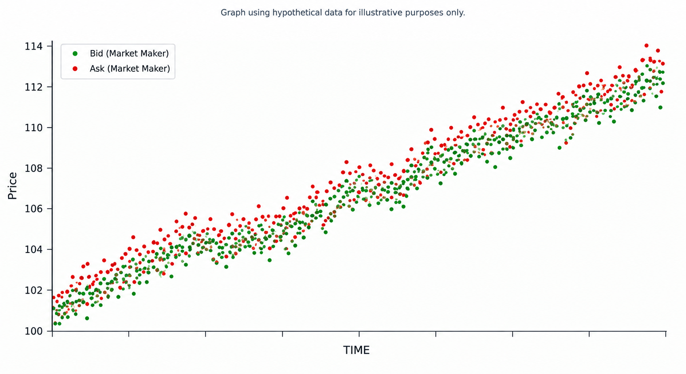
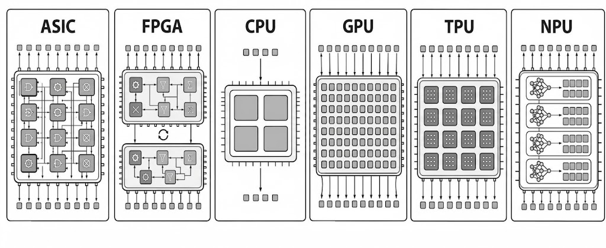
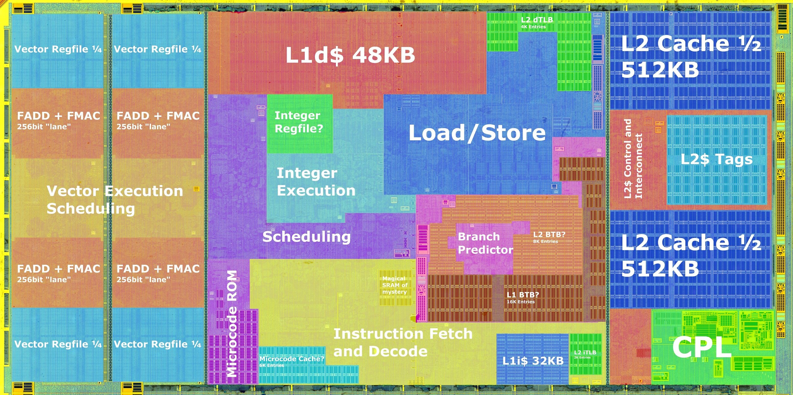
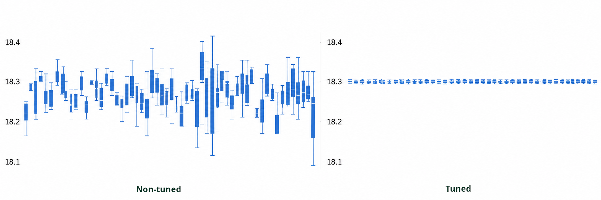
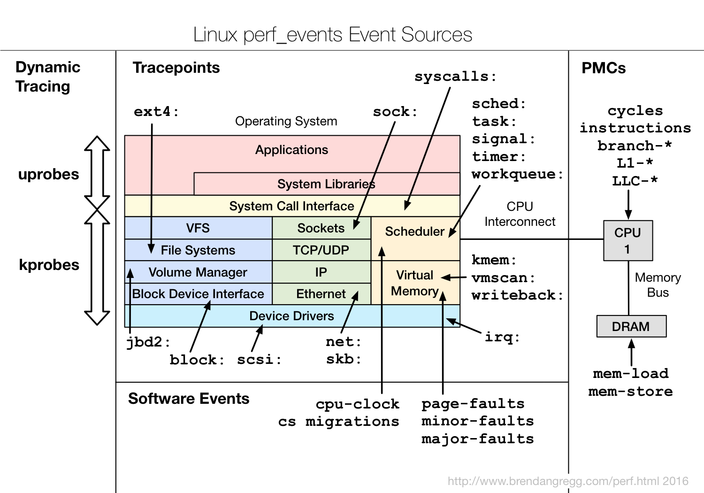
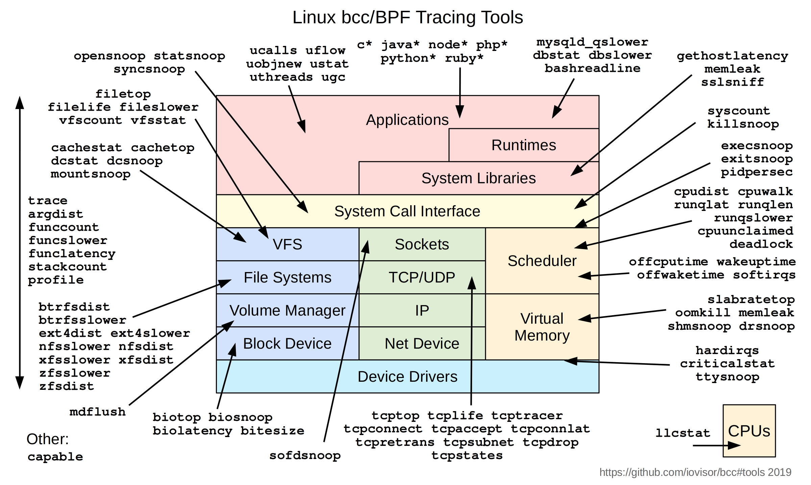
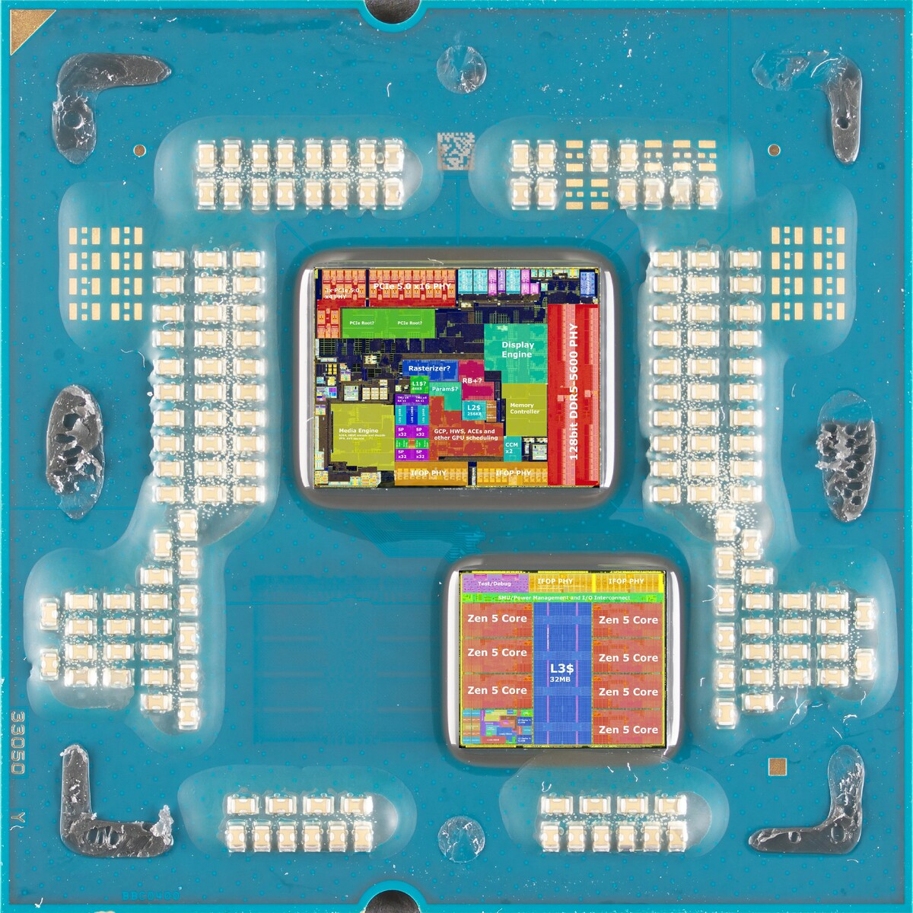
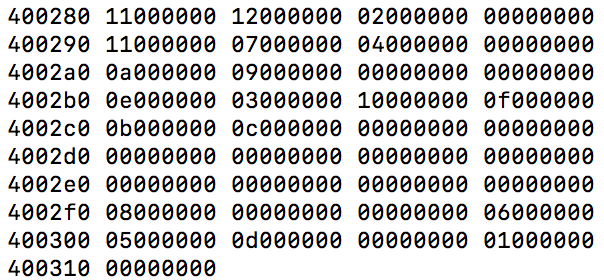
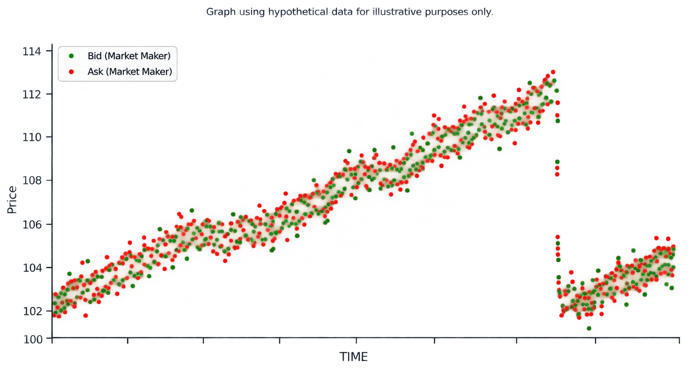
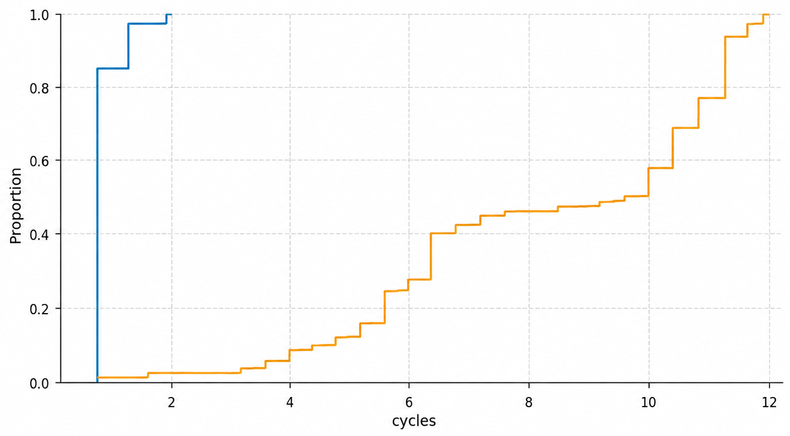

<!doctype html>
<html lang="en">
  <head>
    <meta charset="utf-8">
    <meta name="viewport" content="width=device-width, initial-scale=1.0, maximum-scale=1.0, user-scalable=no">

    <title>Nanosecond Count</title>

    <link rel="stylesheet" href="reveal.js/css/reveal.css">
    <link rel="stylesheet" href="reveal.js/css/theme/white.css" id="theme">
    <link rel="stylesheet" href="extensions/plugin/line-numbers/line-numbers.css">
    <link rel="stylesheet" href="extensions/css/highlight-styles/default.css">
    <link rel="stylesheet" href="extensions/css/custom.css">

    <style>
      .reveal h1, .reveal h2, .reveal h3, .reveal h4, .reveal h5 { text-transform: none; }
    </style>

    <script>
      var link = document.createElement( 'link' );
      link.rel = 'stylesheet';
      link.type = 'text/css';
      link.href = window.location.search.match( /print-pdf/gi ) ? 'reveal.js/css/print/pdf.css' : 'reveal.js/css/print/paper.css';
      document.getElementsByTagName( 'head' )[0].appendChild( link );

      function set_address(self, remote, local) {
        if (window.location.search.match("local")) {
          self.href = local;
        } else {
          self.href = remote;
        }
      }
    </script>

    <meta name="apple-mobile-web-app-capable" content="yes">
    <meta name="apple-mobile-web-app-status-bar-style" content="black-translucent">
  </head>

  <body>
    <div class="reveal">
      <div class="slides">

          <section data-markdown=""
                   data-separator="^====+$"
                   data-separator-vertical="^----+$">
          <script type="text/template">
## Nanosecond count
<!-- .element: style="text-align:left" -->

Kris Jusiak
<!-- .element: style="text-align:left; font-size:24px;" -->

----

### Market Making
<!-- .element: style="text-align:left" -->

<p align="left">

</p>

```sh
- Small edge
- High frequency
- Quote both sides, capture spread
```
<!-- .element: style="text-align:left; font-size:20px; margin: -40px 0px;" -->

----

#### Trading / Latency (ns/op)
<!-- .element: style="text-align:left" -->

```cpp
[[gnu::hot]] void hot_path() {
    while (true) {                                          // Tick-to-trade
        auto&& data = recv(udp_socket);                     // Market Data
        auto&& book = update_order_book(data);              // [*]
        if (auto&& signal = strategy(book)) [[likely]] {    // 99.9% no signal
            auto ack = send_order(signal);
            [[gnu::cold]] [&] {                             // [*] Order Book
                if (not ack) {                              // Bids      | Asks
                    error(ack);                             // 100@10.00 | 100@10.01
                }                                           // 200@9.99  | 150@10.02
            }();
        } else if (should_warm()) {
            warm(data);                                     // Keep cache/branch hot
        }
    }
}
```
<!-- .element: style="text-align:left; font-size:16px;" -->

<div style="margin: 50px 0px;" />

#### Backtesting / Throughput (msgs/sec)
<!-- .element: style="text-align:left" -->

```python
for day in date_range(date(2020, 1, 1), date(2026, 10, 01)):
    for md in market_data(["SPY"], day):
        strategy.on_data(md)
# ...
```
<!-- .element: style="text-align:left; font-size:16px;" -->

----

### Challenges
<!-- .element: style="text-align:left" -->

```sh
- Signal is rare (~0.1% of ticks)
- Market regimes shift fast (Open/Close auctions)
- Strategy is cache/branch heavy (OrderBook + Model)
- Model complexity vs realistic fill rate (latency) + fees
...
```

----

### Solutions / Hardware
<!-- .element: style="text-align:left" -->

```cpp
<-- Latency / Throughput -->
```
<!-- .element: style="text-align:left; font-size:10px;" -->
<p align="left">

</p>

```cpp
- Time to market (winner takes 'all', scaling law)
- Know your hardware (colocated, no users)
- Easier to optimize (deterministic hardware, performance monitoring)
...
```
<!-- .element: style="text-align:left; font-size:20px;" -->

----

#### CPUs are primarily bottlenecked by
<!-- .element: style="text-align:left" -->

```cpp
- Data access
- Branch prediction
- Instruction supply
```
<!-- .element: style="text-align:left; font-size:18px;" -->

<p align="left">

</p>

```cpp
 benchmark              cycles  cycles/4Ghz[ns] variability
 -------------------- --------  --------------- -----------
 1 cycle execution      1 ± 00      0.25 ± 0.00 ▏
 L1d hit                3 ± 01      0.75 ± 0.25 █░
 branch misprediction  14 ± 10      3.50 ± 2.50 ███░░░
 L2d hit               12 ± 03      3.00 ± 0.75 ███░░
 L3d hit               50 ± 05     10.00 ± 1.25 █████████░░░
 DRAM access          350 ± 20     70.00 ± 5.00 ████████████████████████████████████████████░░░░░
```
<!-- .element: style="text-align:left; font-size:16px;" -->

----

#### Tuning / min(jitter)
<!-- .element: style="text-align:left" -->

<p align="left">

</p>

```cpp
- Isolate cores (isolcpus, nohz_full, ...)
- Pin threads (affinity, NUMA), ...
- Disable SMT/HT, ASLR, mitigations, frequency scaling
- Bypass kernel (DPDK/Onload, busy-poll, no syscalls)
- Huge pages, pre-fault + mlock (no TLB misses)
...
```
<!-- .element: style="text-align:left; font-size:18px;" -->

----

#### Profiling / Performance Monitoring Unit (PMU)
<!-- .element: style="text-align:left" -->




```cpp
while (true) {
    // ...
    if (should_trigger(...)) [[likely]] { // 99.9% false: sampling misses it, avg lies
        // ...
    }
}
```
<!-- .element: style="text-align:left; font-size:14px;" -->

```
 CPU                      Intel        Amd          Arm                         HFT 'friendly'
  ├─ Timestamp Counter    RDTSC/RDTSCP RDTSC/RDTSCP CNTVCT_EL0/CNTPCT_EL0        ├─ ✅
  ├─ Performance Counters RDPMC        RDPMC        PMCCNTR_EL0/PMEVCNTRN_EL0    ├─ ✅
  ├─ Event sampling       PEBS         IBS          SPE                          ├─ ❌ (applies to PGO)
  ├─ Branch Recording     LBR          LBR          BRBE                         ├─ ❌ (applies to PGO)
  └─ Processor Trace      PT           -            ETM (CoreSight)              ├─ ✅
```
<!-- .element: style="text-align:left; font-size:14px;" -->

----

#### Optimizing / Hardware Effects
<!-- .element: style="text-align:left" -->

```sh
Code                       Assembly             Address Encoding             Hardware Effect
```
<!-- .element: style="text-align:left; font-size:16px;" -->

<p align="left">


</p>

```cpp
void hot_path() {          push rbp             401100  55                   // alignment (icache)
  auto&& book = ...;       mov rbp,rsp          401101  48 89 e5             // stack (frame)
  while (true) {           nop                  401104  66 0f 1f 44 00 00    // alignment
    auto&& s = book[lvl];  mov eax,[rdi*4+0x20] 40110a  8B 04 BD 00 20 40 00 // data cache
    if (s == signal) {     cmp eax,ecx          401111  39 c8
      ...                  je 0x40111d          401113  74 08                // branch predictor
  }                        pop rbp              401115  5d                   // stack (unwind)
}                          ret                  401116  c3

book:                                           402000                       // layout (.rodata)
 .long 42                                       402000  20 00 00 00
 .long 123                                      402004  41 01 00 00
                              ...
```
<!-- .element: style="text-align:left; font-size:16px;" -->

----

#### "The Worst" Possible Execution / p99+
<!-- .element: style="text-align:left;" -->

```json
{
    "code": {
        "align": "unaligned",       // [[clang::code_align(N)]]
    },
    "stack": {
        "align": "unaligned",
        "size":  "random",
    },
    "func": {
        "align": "unaligned",       // gnu::aligned(16)
        "order": "random",
    },
    "branch": "unpredictable",
    "dcache": {
        "L1":   {"hit_rate": 0},
        "L2":   {"hit_rate": 0},
        "L3":   {"hit_rate": 0},
        "DRAM": {"hit_rate": 100},
    },
    "icache": {"hit_rate": 0},
    "dtlb":   {"hit_rate": 0},
    "itlb":   {"hit_rate": 0},
}
```
<!-- .element: style="text-align:left; font-size:16px;" -->



```cpp
- What if caches won’t be as hot?
- What if branches won’t be as predictable?
- What if the code/data layout changes?
- What if ...?
```
<!-- .element: style="text-align:left; font-size:16px;" -->

----

#### Cache-line Eviction
<!-- .element: style="text-align:left; " -->

```cpp
auto refresh(const void* addr, const auto level) {
    assert(addr);
    if constexpr (level == Level::L1) {
        load(addr);                              // L1d
        fence();
    } else if constexpr (level == Level::L2) {
        flush(addr);                             // DRAM
        fence();
        prefetch<Level>(addr);                   // PREFETCHT1 hint
    } else if constexpr (level == Level::L3) {
        load(addr);                              // L1d
        fence();
        demote(addr);                            // CLDEMOTE hint
    } else {
        flush(addr);                             // DRAM
        fence();
    }
    settle();
}
```
<!-- .element: style="text-align:left; font-size:16px;" -->

<table>
<tr>
<td>

</td>
<td>
<pre style="font-size:14px; margin: 0 0;"><code>PREFETCHNTA  Non-temporal
PREFETCHT0   Hint into all cache levels (L1 priority)
PREFETCHT1   Hint into L2/L3, lower L1 priority
PREFETCHT2   Hint into L2/L3 with even lower urgency
CLFLUSH{OPT} Flush Cache Line
CLDEMOTE     Hint into more distant level (Sapphire Rapids+)
</code></pre>
</td>
</tr>
</table>

----

### If you don’t see the liquidity,
<!-- .element: style="text-align:left; " -->
##### you are the liquidity!
<!-- .element: style="text-align:left; " -->

----

### Citadel Securities
<!-- .element: style="text-align:left; " -->

https://citadelsecurities.com/careers/engineering
<!-- .element: style="text-align:left; font-size:24px" -->


          </script>
        </section>
      </div>
    </div>

    <script src="reveal.js/js/reveal.js"></script>

    <script>

      // Full list of configuration options available at:
      // https://github.com/hakimel/reveal.js#configuration
      Reveal.initialize({

        // Display controls in the bottom right corner
        controls: true,

        // Display a presentation progress bar
        progress: false,

        // Display the page number of the current slide
        slideNumber: 'c',

        // Push each slide change to the browser history
        history: true,

        // Enable keyboard shortcuts for navigation
        keyboard: true,

        // Enable the slide overview mode
        overview: false,

        // Vertical centering of slides
        center: true,

        // Enables touch navigation on devices with touch input
        touch: true,

        // Loop the presentation
        loop: false,

        // Change the presentation direction to be RTL
        rtl: false,

        // Turns fragments on and off globally
        fragments: false,

        // Flags if the presentation is running in an embedded mode,
        // i.e. contained within a limited portion of the screen
        embedded: false,

        // Flags if we should show a help overlay when the questionmark
        // key is pressed
        help: false,

        // Flags if speaker notes should be visible to all viewers
        showNotes: false,

        // Number of milliseconds between automatically proceeding to the
        // next slide, disabled when set to 0, this value can be overwritten
        // by using a data-autoslide attribute on your slides
        autoSlide: 0,

        // Stop auto-sliding after user input
        autoSlideStoppable: true,

        // Enable slide navigation via mouse wheel
        mouseWheel: false,

        // Hides the address bar on mobile devices
        hideAddressBar: true,

        // Opens links in an iframe preview overlay
        previewLinks: false,

        // Transition style
        transition: 'none', // none/fade/slide/convex/concave/zoom

        // Transition speed
        transitionSpeed: 'default', // default/fast/slow

        // Transition style for full page slide backgrounds
        backgroundTransition: 'none', // none/fade/slide/convex/concave/zoom

        // Number of slides away from the current that are visible
        viewDistance: 1,

        // Parallax background image
        parallaxBackgroundImage: '', // e.g. "'https://s3.amazonaws.com/hakim-static/reveal-js/reveal-parallax-1.jpg'"

        // Parallax background size
        parallaxBackgroundSize: '', // CSS syntax, e.g. "2100px 900px"

        // Number of pixels to move the parallax background per slide
        // - Calculated automatically unless specified
        // - Set to 0 to disable movement along an axis
        parallaxBackgroundHorizontal: null,
        parallaxBackgroundVertical: null,

        // Optional reveal.js plugins
        dependencies: [
          { src: 'reveal.js/lib/js/classList.js', condition: function() { return !document.body.classList; } },
          { src: 'reveal.js/plugin/markdown/marked.js', condition: function() { return !!document.querySelector( '[data-markdown]' ); } },
          { src: 'reveal.js/plugin/markdown/markdown.js', condition: function() { return !!document.querySelector( '[data-markdown]' ); } },
          { src: 'reveal.js/plugin/highlight/highlight.js', async: true, callback: function() { hljs.initHighlightingOnLoad(); } },
          { src: 'reveal.js/plugin/zoom-js/zoom.js', async: true },
          { src: 'reveal.js/plugin/notes/notes.js', async: true },
          { src: 'extensions/plugin/line-numbers/line-numbers.js' }
        ]
      });

      function handleClick(e) {
        if (1 >= outerHeight - innerHeight) {
          document.querySelector( '.reveal' ).style.cursor = 'none';
        } else {
          document.querySelector( '.reveal' ).style.cursor = '';
        }

        e.preventDefault();
        if(e.button === 0) Reveal.next();
        if(e.button === 2) Reveal.prev();
      }
    </script>

  </body>
</html>
